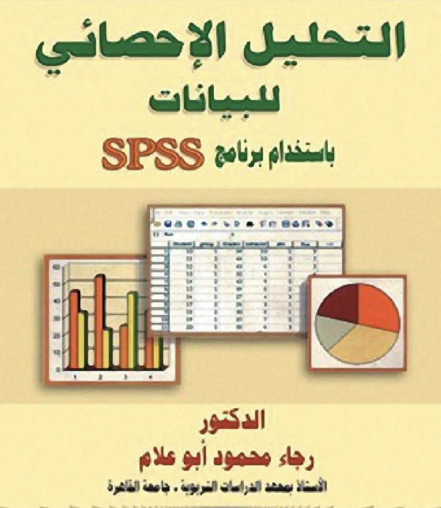
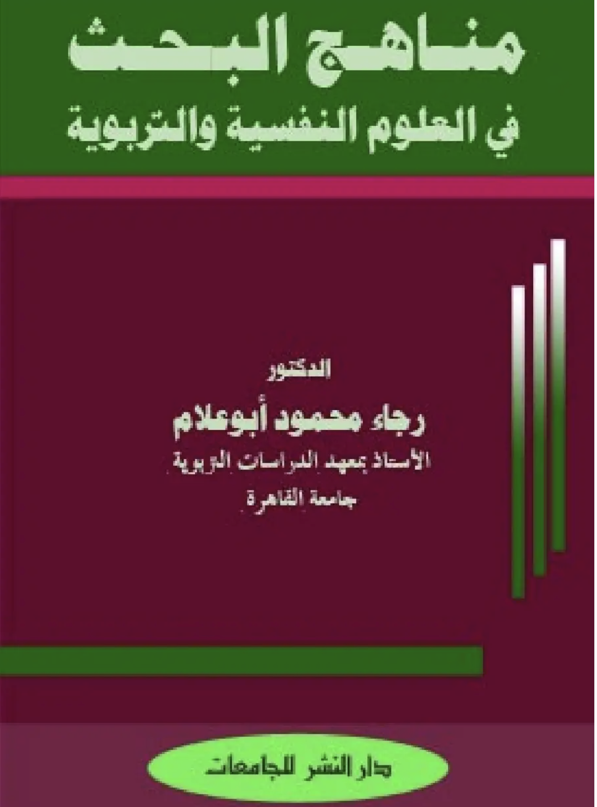

رائد من رواد القياس النفسي والتقويم التربوي والتحليل الإحصائي ومناهج البحث العلمي في العالم العربي. كرّس حياته الأكاديمية في معهد الدراسات والبحوث التربوية بجامعة القاهرة لبناء أجيال من الباحثين وتأسيس المرجعيات المنهجية للدراسات العليا.
تأليف مراجع معتمدة ورائدة في العالم العربي تبسط التحليل الإحصائي البارامتري واللابارامتري وتطبيقات برنامج SPSS لطلبة الماجستير والدكتوراه.
أبحاث متعمقة في الفروق الفردية، واختبارات الذكاء والقدرات العقلية، وتطوير معايير القياس التربوي بما يلائم البيئة العربية.
وضع أدلة إرشادية وتأصيلية لطرق البحث الكمي والكيفي، وتصميم التجارب، وكتابة الأطروحات العلمية المحكمة وإعداد الرسائل الجامعية.

مرجع شامل يغطي أسس تحليل البيانات وتفسير المخرجات الإحصائية في البحوث الإنسانية والتربوية عبر طبعات متعددة.
تفاصيل الكتاب والمحتويات ←
كتاب منهجي يتناول أصول المعرفة العلمية، وخطوات بناء الفروض، وأدوات جمع البيانات وتصميم التجارب العلمية.
تفاصيل الكتاب والمحتويات ←ثلاثة عقود من العطاء الأكاديمي؛ ترأس خلالها قسم علم النفس التربوي بجامعة الكويت، ودرّس 12 مقرراً جامعياً وتخصصياً، وأشرف على تقنين كبرى بطاريات الذكاء العالمية والمشروع الوطني لرعاية المتفوقين.